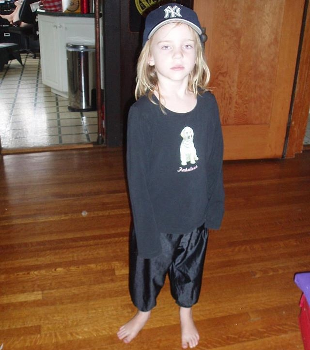
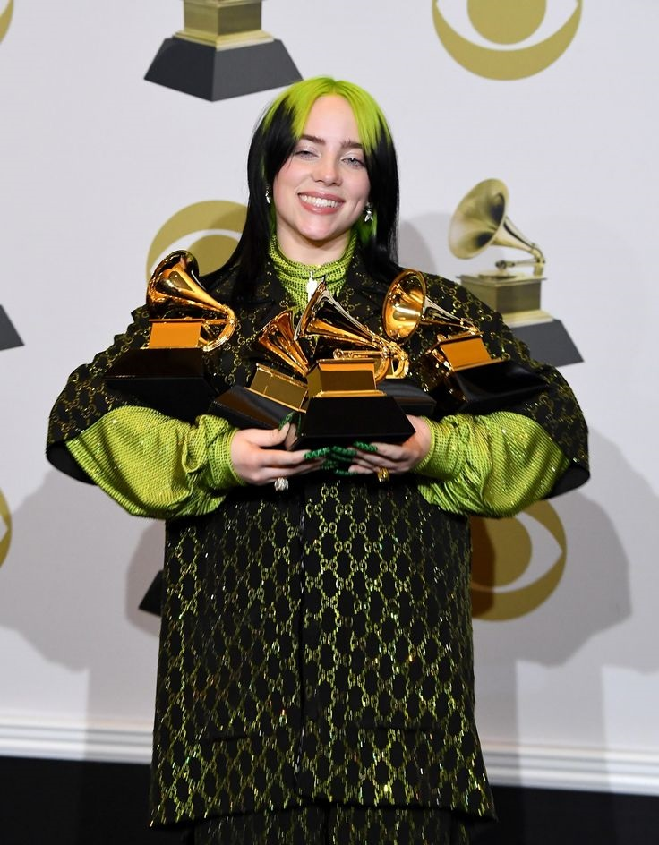
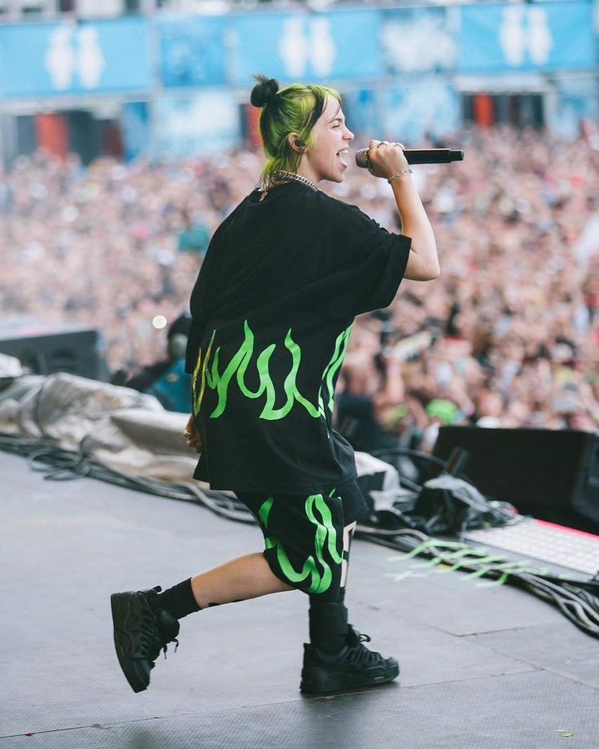

Billie Eilish foi criada em Highland Park de Los Angeles.
Billie em seu primeiro clipe da musica "Ocean Eyes", lançada em 2016

Em 2020, conquistou cinco prêmios Grammy, incluindo o de Gravação do Ano, Álbum do Ano, Canção do Ano e Artista Revelação. Fazendo dela a artista mais jovem e a primeira mulher a ganhar nas quatro principais categorias em um mesmo ano. O álbum "When We All Fall Asleep, Where Do We Go?" e a música "bad guy" foram particularmente destacados.

Atualmente, Billie Eilish continua sendo uma das artistas mais influentes e populares da indústria musical, tendo acumulado inúmeros prêmios e indicações ao longo de sua carreira.